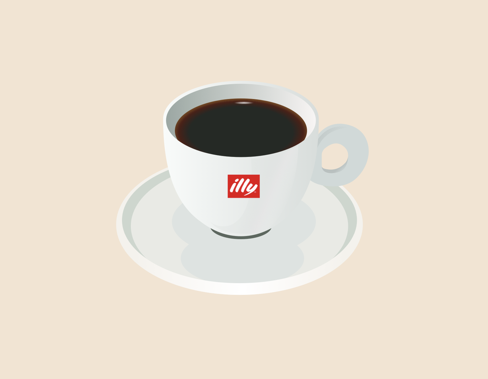

GALLERY
- All
- Web
- App
- Printing
- Event
- Photo
- Other
-
harahiro's portfolio site
初めて作ったポートフォリオサイト。Progateで学習した知識と奥さんのサポートにより無事完成した。会社で作成したクリエイティブが載せられなさそうなので、コンテンツが少ないのが悩み。結構頑張ったのでPC/SP両方で見てもらえると嬉しいです。
-

illy coffee illust
illyコーヒーのイラスト。美味しそうに感じてもらえたら嬉しい。
-
新宿御苑 桜
日が陰る下でも綺麗に咲く桜。繊細に見えるが力強さも感じる。
-
キンシャチ
新宿御苑 大温室のキンシャチ。キンシャチはサボテンの1種で、高さは最大で1m以上に達する。
-
青いバナナ
新宿御苑 大温室のバナナ。近くで見ると思った以上に大きい。
-
建築機材
大規模な建築を支える大規模な建築機材。近くで見ると迫力がある。
-
跳開橋側の機材
ららぽーと豊洲 アーバン・ゲート・ブリッジ（跳開橋）側にある機材。夕暮れの機材には風情がある。
-
日本橋 銅像
良い顔をしている。
-
万華鏡 "星"
SKY CIRCUS サンシャイン60展望台の万華鏡。宇宙にいるような美しい空間が広がる。
-
万華鏡 "線"
SKY CIRCUS サンシャイン60展望台の万華鏡。引き込まれる綺麗さ。
-
羊の鼻先
伊香保グリーン牧場の羊。人懐っこく可愛い容姿を持つが、意外とパワフルで毛はごわごわした手触りをしている。
-
線路
自然に囲まれた見通しの良い線路。鈍行列車で通過したくなるような、そんな線路。
-
東京駅
KITTEから撮影。レトロな建造物とビル群が溶け合う景色が好きな一枚。
GALLERY